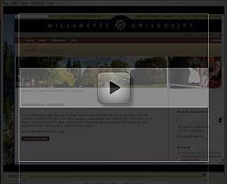

The theses of students are now being stored online in Willamette’s Academic Commons. Access to these collections
are limited to current students and faculty at Willamette.
The 3-minute
video below walks you through the entire submission process. Note: this video is from an earlier interface but the steps are the same. Any questions
should be directed to John Repplinger (jrepplin@willamette.edu or
503-370-6525).

Thesis Submission
- Save your thesis as a PDF document. Make sure to save the file name in the following format:
Last Name_First Name_Department_Thesis_Year.pdf or
Last Name_First Name_SSRD_Year.pdf
Macs: When you print, click PDF in the bottom left corner of the print box and save the file as a PDF document.
PCs: In Word 2007, click Acrobat at the top of the page and select CREATE PDF.
- Log in to the Academic Commons submission area.
- Select the appropriate collection from the drop down bar and click next.
- Fill out the following fields and click next.
Author: (Last name – First name)
Title: Your project title, including subtitles
Type: (e.g. select Thesis or Text if it is not a thesis)
Language: (select English (United States))
- Fill out the following fields and click next.
Subject Keywords: Use 5-6 phrases or words that describe the key concepts of your work. Click ADD after each phrase.
Abstract: Copy and paste your abstract. Bold fonts, italics, etc. will not copy over.
Sponsors: Your advisor’s name (e.g. Professor John Smith)
- Upload the PDF and enter the description of document
(e.g. Chemistry Thesis or Thesis Title Page)
- Review your info and click next.
- Click I Grant the License and Complete Submission.
As part of the submission process, you grant the University the right to preserve and provide access the material by future Willamette University students and faculty or for access without restriction, at the discretion of the University. To grant this right, you must own copyright to the work or have obtained the permission of the copyright owner. For more information, see the Academic Commons Intellectual Property Policy.
- The liaison libraian in charge if the department's collection will make the final approval before it appears in the collection.